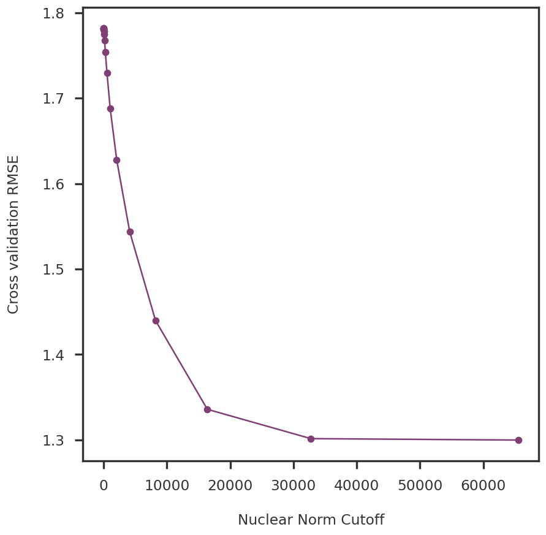

dscout_dir ="/gpfs/commons/groups/knowles_lab/sbanerjee/low_rank_matrix_approximation_numerical_experiments/panukb"data_filename = os.path.join(dscout_dir, f"ukbb/ukbb_1.pkl")with (open(data_filename, "rb")) as fh: data = pickle.load(fh)
Code
X = np.array(zscore_df.values.T)#X_cent = X - np.mean(X, axis = 0, keepdims = True)X_cent = data['Ztrue']Z_cent = data['Z']Z_mask = data['Zmask']print (f"We have {X_cent.shape[0]} samples (phenotypes) and {X_cent.shape[1]} features (variants)")print (f"Fraction of Nan entries: {np.sum(np.isnan(X)) / np.prod(X_cent.shape):.3f}")print (f"Fraction of masked entries: {np.sum(Z_mask) / np.prod(X_cent.shape):.3f}")zero_rmse = get_masked_rmse(X_cent, np.zeros_like(X_cent), mask = Z_mask)print (f"RMSE of zero prediction: {zero_rmse}")
We have 216 samples (phenotypes) and 48212 features (variants)
Fraction of Nan entries: 0.000
Fraction of masked entries: 0.200
RMSE of zero prediction: 1.9950481725240365
In Figure 1 we plot a heatmap from the covariance matrix of the Z-scores.
To find the best possible lambda, we apply Robust PCA on the masked data with different values of \lambda. The RMSE of the recovered values is shown in Figure 2. As currently implemented, Robust PCA fails to recover the masked data and the RMSE is comparable to that from zero entries.
Code
fig = plt.figure()ax1 = fig.add_subplot(111)_optlmb = rpca_res['cvlmb'][np.argmin(rpca_res['cvrmse'])]ax1.plot(rpca_res['cvlmb'], rpca_res['cvrmse'], marker ='o')ax1.axvline(x = _optlmb, ls ='dotted', color ='grey')ax1.set_xlabel("Lambda")ax1.set_ylabel("RMSE for masked entries")plt.show()
Figure 2: RMSE of recovered values of masked entries in the PanUKB data
For NNM, we consider the input as an incomplete data matrix. We perform a 2-fold cross-validation on the incomplete input data and show the RMSE for the CV and the RMSE for the cross-validation is shown in Figure 3.
Code
fig = plt.figure()ax1 = fig.add_subplot(111)nnm_cvres = nnm_res['model']['test_error']ax1.plot(nnm_cvres.keys(), [np.mean(x) for x in nnm_cvres.values()], marker ='o')ax1.set_xlabel("Nuclear Norm Cutoff")ax1.set_ylabel("Cross validation RMSE")plt.show()

Figure 3: RMSE for recovery of hold-out test data
Read NNM Sparse results
Code
rank_seq = [128.0, 256.0, 512.0, 1024.0, 2048.0, 4096.0, 8192.0, 16384.0, 32768.0, 65536.0]nnm_sparse_res =dict()for r in rank_seq: out_filename = os.path.join(dscout_dir, f"nnm_sparse/ukbb_1_nnm_sparse_{r}.pkl")if os.path.isfile(out_filename):withopen(out_filename, 'rb') as fh: nnm_sparse_res[r] = pickle.load(fh)
Code
nnm_sparse_cvres =dict()nnm_sparse_nucnorm =dict()for rank, model in nnm_sparse_res.items(): nnm_sparse_cvres[rank] = get_masked_rmse(X_cent, model['X_'], mask = Z_mask) nnm_sparse_nucnorm[rank] = np.linalg.norm(model['X_'], 'nuc')
For the NNM Sparse model, we looked at the RMSE of the masked data predicted by NNM in the left panel of Figure 4. In the right panel, we show the nuclear norm of the recovered matrix against the input constraint.
Figure 6: Correlation of Z-scores for the masked entries recovered by the different methods.
Code
fig = plt.figure(figsize = (8, 8))ax1 = fig.add_subplot(111)yvals = [get_masked_rmse(X_cent, Z_cent, mask=Z_mask)] +list(optimum_rmse.values())xvals = np.arange(len(yvals))bcolors = ["grey"] + [method_colors[x] for x in optimum_rmse.keys()]ax1.bar(xvals, yvals, align ='center', width =0.7, color = bcolors, edgecolor = bcolors, alpha =0.7)ax1.set_xticks(xvals)ax1.set_xticklabels(["Zero"] + [method_labels[x] for x in optimum_rmse.keys()])for side in ['top', 'right']: ax1.spines[side].set_visible(False)ax1.tick_params(bottom=False)ax1.set_ylabel("RMSE for masked entries")plt.show()